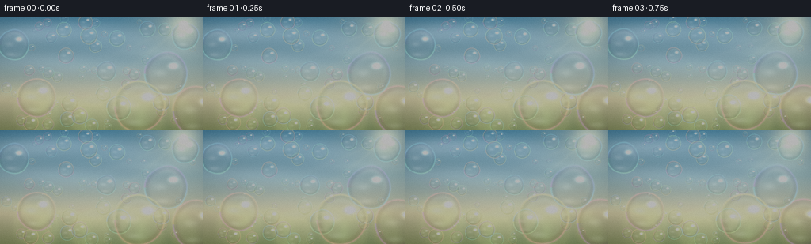
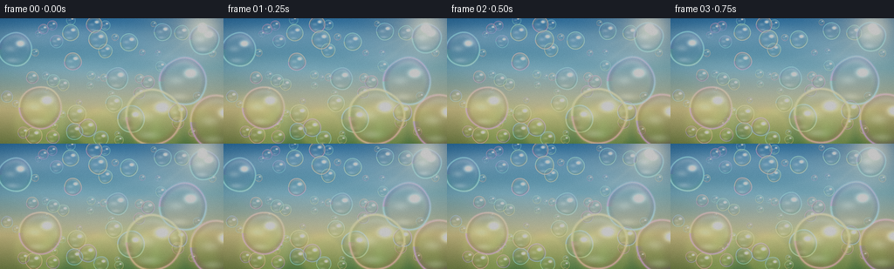
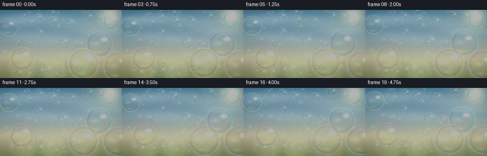
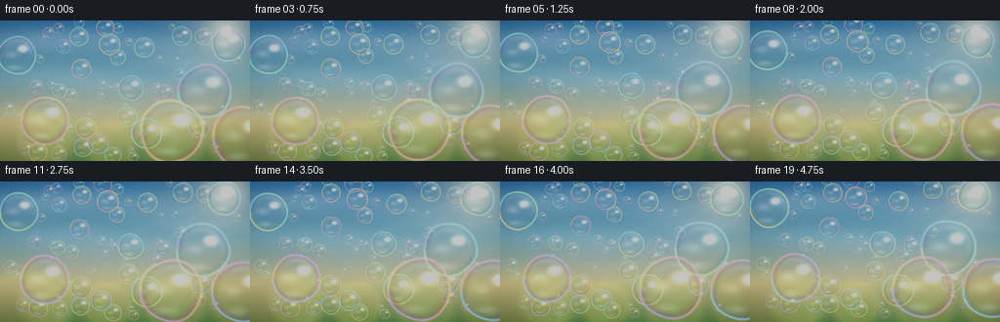
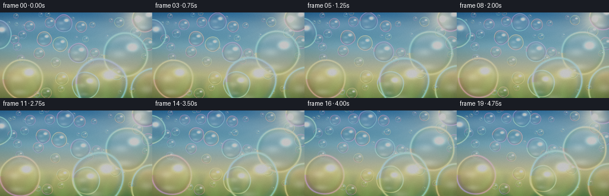
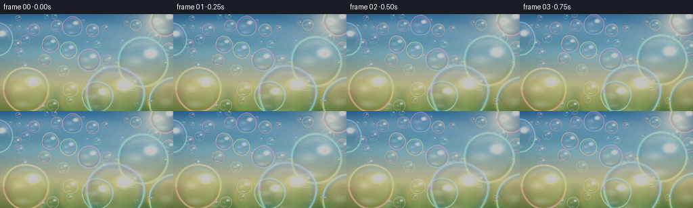

CODING AGENTS AS PIXEL WORLD MODELS
traex/DeepSeek-V4.1-Flash · phygen_076
点击播放 · 原生 RGB 像素
逐轮保存的候选
回放视频、检查图与代码变化。
每份候选均可单独播放。实际图片检查记录在下方工具轨迹中。
候选 01播放与检查图
点击播放 · 原生 RGB 像素


展开代码变化
--- 上一保存版本
+++ 本次保存版本
@@ -0,0 +1,328 @@
+from pathlib import Path
+
+import numpy as np
+from PIL import Image, ImageFilter
+
+import artifact_io
+
+
+CASE_DIR = Path(__file__).resolve().parent
+WIDTH = 256
+HEIGHT = 144
+FRAMES = 20
+FPS = 4.0
+SUPERSAMPLE = 4
+
+
+def smoothstep(edge0, edge1, value):
+ t = np.clip((value - edge0) / (edge1 - edge0), 0.0, 1.0)
+ return t * t * (3.0 - 2.0 * t)
+
+
+def make_background(t):
+ w = WIDTH * SUPERSAMPLE
+ h = HEIGHT * SUPERSAMPLE
+ yy, xx = np.mgrid[0:h, 0:w].astype(np.float32)
+ x = xx / (w - 1)
+ y = yy / (h - 1)
+
+ stops = np.array([0.0, 0.40, 0.73, 1.0], dtype=np.float32)
+ colors = np.array(
+ [
+ [0.27, 0.57, 0.77],
+ [0.52, 0.75, 0.84],
+ [0.88, 0.86, 0.70],
+ [0.55, 0.64, 0.39],
+ ],
+ dtype=np.float32,
+ )
+ image = np.empty((h, w, 3), dtype=np.float32)
+ for channel in range(3):
+ image[..., channel] = np.interp(y, stops, colors[:, channel])
+
+ horizon_haze = np.exp(-((y - 0.70) / 0.17) ** 2)
+ image += horizon_haze[..., None] * np.array([0.18, 0.15, 0.075], dtype=np.float32)
+
+ cloud_specs = [
+ (0.12, 0.16, 0.23, 0.085, 0.20),
+ (0.36, 0.11, 0.29, 0.070, 0.16),
+ (0.62, 0.20, 0.24, 0.075, 0.14),
+ (0.78, 0.31, 0.20, 0.055, 0.12),
+ (0.23, 0.39, 0.31, 0.075, 0.11),
+ (0.55, 0.46, 0.35, 0.065, 0.08),
+ ]
+ cloud = np.zeros((h, w), dtype=np.float32)
+ for index, (cx, cy, sx, sy, strength) in enumerate(cloud_specs):
+ cx = (cx + 0.0022 * t * (index + 1)) * w
+ cy = (cy + 0.0015 * np.sin(t * 0.7 + index)) * h
+ g = np.exp(-((xx - cx) / (sx * w)) ** 2 - ((yy - cy) / (sy * h)) ** 2)
+ cloud += g * strength
+ image += cloud[..., None] * np.array([1.00, 0.98, 0.91], dtype=np.float32)
+
+ sun_x = 0.905 * w
+ sun_y = 0.075 * h
+ sun_distance = np.sqrt((xx - sun_x) ** 2 + (yy - sun_y) ** 2)
+ broad_glow = np.exp(-(sun_distance / (0.21 * w)) ** 2)
+ tight_glow = np.exp(-(sun_distance / (0.075 * w)) ** 2)
+ core = np.exp(-(sun_distance / (0.018 * w)) ** 4)
+ image += broad_glow[..., None] * np.array([0.28, 0.22, 0.10], dtype=np.float32)
+ image += tight_glow[..., None] * np.array([0.58, 0.46, 0.23], dtype=np.float32)
+ image += core[..., None] * np.array([1.55, 1.30, 0.83], dtype=np.float32)
+
+ angle = np.arctan2(yy - sun_y, xx - sun_x)
+ radial = np.clip(1.0 - sun_distance / (0.92 * w), 0.0, 1.0) ** 2
+ rays = np.zeros((h, w), dtype=np.float32)
+ for ray_angle, width, strength in [
+ (2.46, 0.055, 0.28),
+ (2.74, 0.040, 0.20),
+ (3.03, 0.070, 0.18),
+ (3.31, 0.045, 0.14),
+ ]:
+ delta = np.angle(np.exp(1j * (angle - ray_angle)))
+ rays += np.exp(-(delta / width) ** 2) * radial * strength
+ image += rays[..., None] * np.array([0.16, 0.13, 0.065], dtype=np.float32)
+
+ bokeh_specs = [
+ (0.08, 0.92, 0.18, [0.92, 0.80, 0.40], 0.20),
+ (0.18, 0.84, 0.12, [0.80, 0.88, 0.47], 0.14),
+ (0.30, 0.94, 0.15, [0.48, 0.64, 0.29], 0.20),
+ (0.44, 0.89, 0.10, [0.93, 0.82, 0.43], 0.15),
+ (0.56, 0.96, 0.18, [0.40, 0.57, 0.28], 0.21),
+ (0.70, 0.88, 0.12, [0.86, 0.83, 0.44], 0.13),
+ (0.82, 0.94, 0.16, [0.53, 0.67, 0.32], 0.20),
+ (0.94, 0.86, 0.11, [0.89, 0.77, 0.36], 0.15),
+ (0.04, 0.57, 0.08, [0.23, 0.47, 0.35], 0.09),
+ (0.97, 0.48, 0.09, [0.28, 0.53, 0.40], 0.08),
+ ]
+ for index, (cx, cy, radius, color, strength) in enumerate(bokeh_specs):
+ cx = (cx + 0.004 * t * np.sin(index + 1.2)) * w
+ cy = (cy + 0.003 * t * np.cos(index + 0.4)) * h
+ radius = radius * w
+ distance = np.sqrt((xx - cx) ** 2 + (yy - cy) ** 2) / radius
+ disc = np.exp(-(distance**8))
+ rim = np.exp(-((distance - 0.82) / 0.12) ** 2) * 0.20
+ glow = disc * strength
+ image = image * (1.0 - glow[..., None] * 0.36)
+ image += (glow + rim * strength)[..., None] * np.asarray(color, dtype=np.float32)
+
+ foliage = np.zeros((h, w), dtype=np.float32)
+ foliage_specs = [
+ (0.00, 0.88, 0.31, 0.28, 0.28),
+ (0.10, 1.02, 0.26, 0.31, 0.22),
+ (0.91, 0.91, 0.25, 0.26, 0.22),
+ (1.00, 1.03, 0.29, 0.31, 0.25),
+ (0.52, 1.04, 0.32, 0.18, 0.12),
+ ]
+ for cx, cy, sx, sy, strength in foliage_specs:
+ foliage += strength * np.exp(
+ -((xx - cx * w) / (sx * w)) ** 2 - ((yy - cy * h) / (sy * h)) ** 2
+ )
+ foliage = np.clip(foliage, 0.0, 0.60)
+ image = image * (1.0 - foliage[..., None] * 0.34)
+ image += foliage[..., None] * np.array([0.015, 0.035, 0.018], dtype=np.float32)
+
+ vignette_x = (x - 0.5) / 0.63
+ vignette_y = (y - 0.48) / 0.70
+ vignette = np.clip(1.0 - 0.20 * (vignette_x**2 + vignette_y**2), 0.76, 1.0)
+ image *= vignette[..., None]
+
+ return np.clip(image, 0.0, 2.5)
+
+
+def build_bubbles():
+ rng = np.random.default_rng(76)
+ bubbles = []
+
+ hero_bubbles = [
+ (18.0, 35.0, 20.0, 0.96),
+ (232.0, 24.0, 17.0, 0.94),
+ (211.0, 72.0, 28.0, 0.99),
+ (47.0, 103.0, 25.0, 0.98),
+ (136.0, 69.0, 13.0, 0.90),
+ (83.0, 49.0, 10.0, 0.84),
+ (174.0, 113.0, 32.0, 1.00),
+ (248.0, 119.0, 31.0, 0.97),
+ (113.0, 25.0, 11.0, 0.86),
+ (151.0, 115.0, 16.0, 0.91),
+ ]
+ for x, y, radius, depth in hero_bubbles:
+ bubbles.append((x, y, radius, depth))
+
+ attempts = 0
+ while len(bubbles) < 62 and attempts < 2500:
+ attempts += 1
+ radius = float(rng.uniform(2.8, 11.5))
+ x = float(rng.uniform(radius * 0.55, WIDTH - radius * 0.55))
+ y = float(rng.uniform(radius * 0.55, HEIGHT - radius * 0.55))
+ if any((x - bx) ** 2 + (y - by) ** 2 < (radius + br + 2.0) ** 2 * 0.46 for bx, by, br, _ in bubbles):
+ continue
+ depth = float(np.clip(0.55 + 0.34 * (radius / 11.5) + rng.normal(0.0, 0.055), 0.54, 0.92))
+ bubbles.append((x, y, radius, depth))
+
+ bubbles.sort(key=lambda item: item[3])
+ result = []
+ for index, (x, y, radius, depth) in enumerate(bubbles):
+ phase = float(rng.uniform(0.0, 2.0 * np.pi))
+ result.append(
+ {
+ "x": x,
+ "y": y,
+ "r": radius,
+ "depth": depth,
+ "phase": phase,
+ "hue": float(rng.uniform(0.0, 1.0)),
+ "vx": float(rng.normal(0.0, 0.65)),
+ "vy": float(rng.uniform(-2.2, -0.45)),
+ "wx": float(rng.uniform(0.45, 2.1) * (0.55 + depth * 0.55)),
+ "wy": float(rng.uniform(0.35, 1.6)),
+ "fx": float(rng.uniform(0.34, 0.74)),
+ "fy": float(rng.uniform(0.28, 0.61)),
+ "wobble": float(rng.uniform(0.010, 0.025)),
+ "order": index,
+ }
+ )
+ return result
+
+
+def bubble_position(bubble, t):
+ phase = bubble["phase"]
+ x = (
+ bubble["x"]
+ + bubble["vx"] * t
+ + bubble["wx"] * np.sin(2.0 * np.pi * bubble["fx"] * t + phase)
+ )
+ y = (
+ bubble["y"]
+ + bubble["vy"] * t
+ + bubble["wy"] * np.sin(2.0 * np.pi * bubble["fy"] * t + phase * 1.37)
+ )
+ return x, y
+
+
+def sample_background(background, sample_x, sample_y):
+ h, w = background.shape[:2]
+ ix = np.clip(np.rint(sample_x).astype(np.int32), 0, w - 1)
+ iy = np.clip(np.rint(sample_y).astype(np.int32), 0, h - 1)
+ return background[iy, ix]
+
+
+def draw_bubble(image, background, bubble, t):
+ x, y = bubble_position(bubble, t)
+ depth = bubble["depth"]
+ pulse = 1.0 + 0.018 * np.sin(t * 1.8 + bubble["phase"])
+ radius = bubble["r"] * SUPERSAMPLE * pulse
+ cx = x * SUPERSAMPLE
+ cy = y * SUPERSAMPLE
+ reach = radius * 1.12
+ x0 = max(0, int(np.floor(cx - reach)))
+ x1 = min(image.shape[1], int(np.ceil(cx + reach + 1)))
+ y0 = max(0, int(np.floor(cy - reach)))
+ y1 = min(image.shape[0], int(np.ceil(cy + reach + 1)))
+ if x0 >= x1 or y0 >= y1:
+ return
+
+ yy, xx = np.mgrid[y0:y1, x0:x1].astype(np.float32)
+ dx = (xx + 0.5 - cx) / radius
+ dy = (yy + 0.5 - cy) / radius
+ theta = np.arctan2(dy, dx)
+ wobble = 1.0 + bubble["wobble"] * np.sin(3.0 * theta + bubble["phase"] + t * 0.85)
+ wobble += bubble["wobble"] * 0.42 * np.sin(5.0 * theta - t * 0.53 + bubble["phase"] * 1.7)
+ radial = np.sqrt(dx * dx + dy * dy) / wobble
+ inside = 1.0 - smoothstep(0.975, 1.012, radial)
+ if not np.any(inside):
+ return
+
+ warp_amount = radius * (0.035 + 0.115 * np.exp(-((radial - 0.91) / 0.17) ** 2))
+ micro_warp = radius * 0.012 * np.sin(3.0 * theta + t * 0.7 + bubble["phase"])
+ sample_x = xx + dx * warp_amount + micro_warp * np.cos(theta)
+ sample_y = yy + dy * warp_amount + micro_warp * np.sin(theta)
+ chroma = (0.6 + 1.5 * np.exp(-((radial - 0.91) / 0.085) ** 2)) * SUPERSAMPLE * 0.55
+ refracted = np.empty((y1 - y0, x1 - x0, 3), dtype=np.float32)
+ refracted[..., 0] = sample_background(background, sample_x + dx * chroma, sample_y)[..., 0]
+ refracted[..., 1] = sample_background(background, sample_x, sample_y)[..., 1]
+ refracted[..., 2] = sample_background(background, sample_x - dx * chroma, sample_y)[..., 2]
+
+ phase = (
+ bubble["hue"]
+ + 0.33 * theta / (2.0 * np.pi)
+ + 0.42 * radial
+ + 0.045 * t
+ + 0.07 * np.sin(2.0 * theta - t * 0.6)
+ )
+ film = 0.5 + 0.5 * np.cos(
+ 2.0 * np.pi * (phase[..., None] + np.array([0.0, 0.29, 0.58], dtype=np.float32))
+ )
+ film = 0.30 + 0.70 * film
+
+ ring = np.exp(-((radial - 0.968) / 0.037) ** 2)
+ inner_rim = np.exp(-((radial - 0.865) / 0.115) ** 2)
+ rim_glow = np.exp(-((radial - 0.992) / 0.026) ** 2)
+ body = inside * (1.0 - 0.36 * inner_rim)
+
+ alpha = inside * (0.045 + 0.23 * inner_rim + 0.52 * ring)
+ alpha *= 0.68 + 0.32 * depth
+ alpha = np.clip(alpha, 0.0, 0.80)
+
+ film_tint = refracted * 0.70 + film * (0.15 + 0.23 * inner_rim + 0.25 * ring)[..., None]
+ film_tint *= body[..., None]
+
+ patch = image[y0:y1, x0:x1]
+ patch *= (1.0 - alpha[..., None])
+ patch += film_tint * alpha[..., None]
+
+ sun_side = np.clip(0.44 * dx - 0.88 * dy, 0.0, 1.0)
+ specular_main = np.exp(-((dx - 0.33) / 0.17) ** 2 - ((dy + 0.36) / 0.115) ** 2)
+ specular_soft = np.exp(-((dx + 0.28) / 0.27) ** 2 - ((dy + 0.03) / 0.15) ** 2)
+ caustic = np.exp(-((dx + 0.18) / 0.31) ** 2 - ((dy - 0.63) / 0.11) ** 2)
+ crescent = np.exp(-((radial - 0.79) / 0.15) ** 2) * sun_side
+ highlights = (
+ specular_main * 0.94
+ + specular_soft * 0.11
+ + caustic * 0.10
+ + crescent * 0.12
+ )
+ highlights *= inside * (0.68 + 0.32 * depth)
+ patch += highlights[..., None] * np.array([1.00, 0.98, 0.91], dtype=np.float32)
+
+ iridescent_rim = ring[..., None] * (0.35 + 0.65 * film) * (0.38 + 0.62 * depth)
+ patch += iridescent_rim * 0.18
+ patch += rim_glow[..., None] * film * 0.08
+
+ image[y0:y1, x0:x1] = np.clip(patch, 0.0, 2.8)
+
+
+def render_frame(bubbles, frame_index):
+ t = frame_index / FPS
+ high = make_background(t)
+ background = high.copy()
+ for bubble in bubbles:
+ draw_bubble(high, background, bubble, t)
+
+ image = Image.fromarray(np.clip(high * 255.0, 0.0, 255.0).astype(np.uint8))
+ image = image.resize((WIDTH, HEIGHT), Image.Resampling.LANCZOS)
+ array = np.asarray(image, dtype=np.float32) / 255.0
+
+ bright = np.clip(array - 0.78, 0.0, 1.0)
+ bloom_source = Image.fromarray((bright * 255.0).astype(np.uint8))
+ bloom = np.asarray(bloom_source.filter(ImageFilter.GaussianBlur(radius=2.4)), dtype=np.float32) / 255.0
+ array += bloom * 0.22
+
+ array = 1.0 - np.exp(-array * 1.12)
+ array = np.power(np.clip(array, 0.0, 1.0), 0.94)
+
+ rng = np.random.default_rng(9000 + frame_index)
+ grain = rng.normal(0.0, 0.0045, size=(HEIGHT, WIDTH, 1)).astype(np.float32)
+ array = np.clip(array + grain, 0.0, 1.0)
+
+ return np.clip(array * 255.0 + 0.5, 0.0, 255.0).astype(np.uint8)
+
+
+def main():
+ bubbles = build_bubbles()
+ frames = np.stack([render_frame(bubbles, index) for index in range(FRAMES)])
+ artifact_io.save(frames, CASE_DIR)
+ print(f"saved {len(frames)} frames to {CASE_DIR}")
+
+
+if __name__ == "__main__":
+ main()
候选 02播放与检查图
点击播放 · 原生 RGB 像素


展开代码变化
--- 上一保存版本
+++ 本次保存版本
@@ -29,10 +29,10 @@
stops = np.array([0.0, 0.40, 0.73, 1.0], dtype=np.float32)
colors = np.array(
[
- [0.27, 0.57, 0.77],
- [0.52, 0.75, 0.84],
- [0.88, 0.86, 0.70],
- [0.55, 0.64, 0.39],
+ [0.12, 0.39, 0.68],
+ [0.35, 0.65, 0.79],
+ [0.82, 0.76, 0.49],
+ [0.28, 0.45, 0.22],
],
dtype=np.float32,
)
@@ -41,15 +41,15 @@
image[..., channel] = np.interp(y, stops, colors[:, channel])
horizon_haze = np.exp(-((y - 0.70) / 0.17) ** 2)
- image += horizon_haze[..., None] * np.array([0.18, 0.15, 0.075], dtype=np.float32)
+ image += horizon_haze[..., None] * np.array([0.11, 0.095, 0.040], dtype=np.float32)
cloud_specs = [
- (0.12, 0.16, 0.23, 0.085, 0.20),
- (0.36, 0.11, 0.29, 0.070, 0.16),
- (0.62, 0.20, 0.24, 0.075, 0.14),
- (0.78, 0.31, 0.20, 0.055, 0.12),
- (0.23, 0.39, 0.31, 0.075, 0.11),
- (0.55, 0.46, 0.35, 0.065, 0.08),
+ (0.12, 0.16, 0.23, 0.085, 0.13),
+ (0.36, 0.11, 0.29, 0.070, 0.10),
+ (0.62, 0.20, 0.24, 0.075, 0.09),
+ (0.78, 0.31, 0.20, 0.055, 0.08),
+ (0.23, 0.39, 0.31, 0.075, 0.07),
+ (0.55, 0.46, 0.35, 0.065, 0.05),
]
cloud = np.zeros((h, w), dtype=np.float32)
for index, (cx, cy, sx, sy, strength) in enumerate(cloud_specs):
@@ -83,16 +83,16 @@
image += rays[..., None] * np.array([0.16, 0.13, 0.065], dtype=np.float32)
bokeh_specs = [
- (0.08, 0.92, 0.18, [0.92, 0.80, 0.40], 0.20),
- (0.18, 0.84, 0.12, [0.80, 0.88, 0.47], 0.14),
- (0.30, 0.94, 0.15, [0.48, 0.64, 0.29], 0.20),
- (0.44, 0.89, 0.10, [0.93, 0.82, 0.43], 0.15),
- (0.56, 0.96, 0.18, [0.40, 0.57, 0.28], 0.21),
- (0.70, 0.88, 0.12, [0.86, 0.83, 0.44], 0.13),
- (0.82, 0.94, 0.16, [0.53, 0.67, 0.32], 0.20),
- (0.94, 0.86, 0.11, [0.89, 0.77, 0.36], 0.15),
- (0.04, 0.57, 0.08, [0.23, 0.47, 0.35], 0.09),
- (0.97, 0.48, 0.09, [0.28, 0.53, 0.40], 0.08),
+ (0.08, 0.92, 0.18, [1.00, 0.76, 0.25], 0.24),
+ (0.18, 0.84, 0.12, [0.78, 0.91, 0.34], 0.18),
+ (0.30, 0.94, 0.15, [0.24, 0.48, 0.15], 0.26),
+ (0.44, 0.89, 0.10, [1.00, 0.72, 0.20], 0.20),
+ (0.56, 0.96, 0.18, [0.18, 0.42, 0.14], 0.28),
+ (0.70, 0.88, 0.12, [0.96, 0.79, 0.27], 0.17),
+ (0.82, 0.94, 0.16, [0.30, 0.54, 0.17], 0.26),
+ (0.94, 0.86, 0.11, [1.00, 0.72, 0.20], 0.19),
+ (0.04, 0.57, 0.08, [0.10, 0.34, 0.20], 0.12),
+ (0.97, 0.48, 0.09, [0.14, 0.38, 0.24], 0.11),
]
for index, (cx, cy, radius, color, strength) in enumerate(bokeh_specs):
cx = (cx + 0.004 * t * np.sin(index + 1.2)) * w
@@ -102,7 +102,7 @@
disc = np.exp(-(distance**8))
rim = np.exp(-((distance - 0.82) / 0.12) ** 2) * 0.20
glow = disc * strength
- image = image * (1.0 - glow[..., None] * 0.36)
+ image = image * (1.0 - glow[..., None] * 0.46)
image += (glow + rim * strength)[..., None] * np.asarray(color, dtype=np.float32)
foliage = np.zeros((h, w), dtype=np.float32)
@@ -259,34 +259,34 @@
rim_glow = np.exp(-((radial - 0.992) / 0.026) ** 2)
body = inside * (1.0 - 0.36 * inner_rim)
- alpha = inside * (0.045 + 0.23 * inner_rim + 0.52 * ring)
+ alpha = inside * (0.060 + 0.34 * inner_rim + 0.76 * ring)
alpha *= 0.68 + 0.32 * depth
- alpha = np.clip(alpha, 0.0, 0.80)
-
- film_tint = refracted * 0.70 + film * (0.15 + 0.23 * inner_rim + 0.25 * ring)[..., None]
+ alpha = np.clip(alpha, 0.0, 0.92)
+
+ film_tint = refracted * 0.64 + film * (0.18 + 0.34 * inner_rim + 0.34 * ring)[..., None]
film_tint *= body[..., None]
patch = image[y0:y1, x0:x1]
patch *= (1.0 - alpha[..., None])
patch += film_tint * alpha[..., None]
- sun_side = np.clip(0.44 * dx - 0.88 * dy, 0.0, 1.0)
- specular_main = np.exp(-((dx - 0.33) / 0.17) ** 2 - ((dy + 0.36) / 0.115) ** 2)
- specular_soft = np.exp(-((dx + 0.28) / 0.27) ** 2 - ((dy + 0.03) / 0.15) ** 2)
- caustic = np.exp(-((dx + 0.18) / 0.31) ** 2 - ((dy - 0.63) / 0.11) ** 2)
+ sun_side = np.clip(0.40 * dx - 0.92 * dy, 0.0, 1.0)
+ specular_main = np.exp(-((dx - 0.31) / 0.20) ** 2 - ((dy + 0.34) / 0.145) ** 2)
+ specular_soft = np.exp(-((dx + 0.28) / 0.30) ** 2 - ((dy + 0.03) / 0.17) ** 2)
+ caustic = np.exp(-((dx + 0.16) / 0.34) ** 2 - ((dy - 0.64) / 0.13) ** 2)
crescent = np.exp(-((radial - 0.79) / 0.15) ** 2) * sun_side
highlights = (
- specular_main * 0.94
- + specular_soft * 0.11
- + caustic * 0.10
- + crescent * 0.12
+ specular_main * 1.18
+ + specular_soft * 0.16
+ + caustic * 0.16
+ + crescent * 0.16
)
highlights *= inside * (0.68 + 0.32 * depth)
patch += highlights[..., None] * np.array([1.00, 0.98, 0.91], dtype=np.float32)
iridescent_rim = ring[..., None] * (0.35 + 0.65 * film) * (0.38 + 0.62 * depth)
- patch += iridescent_rim * 0.18
- patch += rim_glow[..., None] * film * 0.08
+ patch += iridescent_rim * 0.30
+ patch += rim_glow[..., None] * film * 0.13
image[y0:y1, x0:x1] = np.clip(patch, 0.0, 2.8)
@@ -307,8 +307,8 @@
bloom = np.asarray(bloom_source.filter(ImageFilter.GaussianBlur(radius=2.4)), dtype=np.float32) / 255.0
array += bloom * 0.22
- array = 1.0 - np.exp(-array * 1.12)
- array = np.power(np.clip(array, 0.0, 1.0), 0.94)
+ array = 1.0 - np.exp(-array * 1.30)
+ array = np.power(np.clip(array, 0.0, 1.0), 0.90)
rng = np.random.default_rng(9000 + frame_index)
grain = rng.normal(0.0, 0.0045, size=(HEIGHT, WIDTH, 1)).astype(np.float32)
候选 03播放与检查图
点击播放 · 原生 RGB 像素

展开代码变化
--- 上一保存版本
+++ 本次保存版本
@@ -134,29 +134,32 @@
bubbles = []
hero_bubbles = [
- (18.0, 35.0, 20.0, 0.96),
- (232.0, 24.0, 17.0, 0.94),
- (211.0, 72.0, 28.0, 0.99),
- (47.0, 103.0, 25.0, 0.98),
- (136.0, 69.0, 13.0, 0.90),
- (83.0, 49.0, 10.0, 0.84),
- (174.0, 113.0, 32.0, 1.00),
- (248.0, 119.0, 31.0, 0.97),
- (113.0, 25.0, 11.0, 0.86),
- (151.0, 115.0, 16.0, 0.91),
+ (-3.0, 37.0, 25.0, 0.98),
+ (244.0, 12.0, 22.0, 0.96),
+ (210.0, 70.0, 37.0, 1.00),
+ (38.0, 113.0, 34.0, 0.99),
+ (133.0, 68.0, 17.0, 0.93),
+ (74.0, 44.0, 12.5, 0.87),
+ (168.0, 120.0, 43.0, 1.00),
+ (258.0, 130.0, 38.0, 0.98),
+ (108.0, 17.0, 15.0, 0.89),
+ (143.0, 123.0, 23.0, 0.94),
+ (228.0, 34.0, 9.0, 0.82),
+ (93.0, 84.0, 8.0, 0.77),
+ (196.0, 103.0, 10.0, 0.81),
]
for x, y, radius, depth in hero_bubbles:
bubbles.append((x, y, radius, depth))
attempts = 0
- while len(bubbles) < 62 and attempts < 2500:
+ while len(bubbles) < 48 and attempts < 2500:
attempts += 1
- radius = float(rng.uniform(2.8, 11.5))
+ radius = float(np.clip(rng.lognormal(np.log(6.0), 0.48), 2.5, 17.0))
x = float(rng.uniform(radius * 0.55, WIDTH - radius * 0.55))
y = float(rng.uniform(radius * 0.55, HEIGHT - radius * 0.55))
- if any((x - bx) ** 2 + (y - by) ** 2 < (radius + br + 2.0) ** 2 * 0.46 for bx, by, br, _ in bubbles):
+ if any((x - bx) ** 2 + (y - by) ** 2 < (radius + br + 3.0) ** 2 * 0.56 for bx, by, br, _ in bubbles):
continue
- depth = float(np.clip(0.55 + 0.34 * (radius / 11.5) + rng.normal(0.0, 0.055), 0.54, 0.92))
+ depth = float(np.clip(0.45 + 0.43 * (radius / 17.0) + rng.normal(0.0, 0.055), 0.43, 0.90))
bubbles.append((x, y, radius, depth))
bubbles.sort(key=lambda item: item[3])
可观测工具轨迹
实际执行的命令与返回图片。
命令 1exit 0
/bin/bash -c "pwd && rg --files -g 'prompt.txt' -g 'GENERATION_RULES.md' -g 'task_spec.json' -g '"'!node_modules'"' -g '"'!vendor'"'"
命令 2exit 0
/bin/bash -c "find . -maxdepth 2 -type f -printf '%p\\n' | sort | head -200"
命令 3exit 0
/bin/bash -c 'git status --short --branch 2>/dev/null || true'
命令 4exit 0
/bin/bash -c 'cat prompt.txt'
命令 5exit 0
/bin/bash -c 'cat GENERATION_RULES.md'
命令 6exit 0
/bin/bash -c 'cat task_spec.json'
命令 7exit 0
/bin/bash -c "sed -n '1,240p' artifact_io.py && printf '\\n--- player ---\\n' && sed -n '1,240p' player_template.html"
命令 8exit 1
/bin/bash -c 'time python generate.py'
命令 9exit 0
/bin/bash -c 'time python generate.py'
命令 10exit 0
/bin/bash -c 'mkdir -p .tmp/candidates/v1 && cp -r frames inspection.png transition_check.png pixels.npz .tmp/candidates/v1/'
命令 11exit 0
/bin/bash -c "python - <<'PY'
from PIL import Image
im=Image.open('frames/00.png')
im.crop((170,30,256,144)).resize((688,912),Image.Resampling.NEAREST).save('.tmp/zoom_v1.png')
PY"命令 12exit 0
/bin/bash -c 'rg -n "sun_side|specular_main|iridescent_rim|alpha =|film_tint|array = 1.0" generate.py'
命令 13exit 0
/bin/bash -c 'time python generate.py'
命令 14exit 0
/bin/bash -c "python - <<'PY'
from PIL import Image
im=Image.open('frames/10.png')
im.crop((165,35,256,144)).resize((728,872),Image.Resampling.NEAREST).save('.tmp/zoom_v2.png')
PY"命令 15exit 0
/bin/bash -c 'mkdir -p .tmp/candidates/v2 && cp -r frames inspection.png transition_check.png pixels.npz .tmp/candidates/v2/'
命令 16exit 0
/bin/bash -c 'time python generate.py'
命令 17exit 0
/bin/bash -c "python -m py_compile generate.py artifact_io.py && find frames -maxdepth 1 -name '*.png' | wc -l"
命令 18exit 0
/bin/bash -c "python - <<'PY'
from pathlib import Path
from PIL import Image
import numpy as np
frames=[np.asarray(Image.open(p),dtype=np.int16) for p in sorted(Path('frames').glob('*.png'))]
d=np.abs(frames[-1]-frames[0])
print('shape',frames[0].shape,'range',frames[0].min(),frames[0].max(),'mean',frames[0].mean().round(2))
print('first-last mean abs diff',d.mean().round(3),'changed pixels',np.mean(np.any(d>3,axis=2)).round(3))
print('artifact sizes:')
for p in ['pixels.npz','index.html','inspection.png','transition_check.png','audio.wav']:
q=Path(p); print(p,q.stat().st_size if q.exists() else 'missing')
PY"视觉工具实际返回图片 1

视觉工具实际返回图片 2
视觉工具实际返回图片 3
视觉工具实际返回图片 4

视觉工具实际返回图片 5
视觉工具实际返回图片 6
视觉工具实际返回图片 7

视觉工具实际返回图片 8
视觉工具实际返回图片 9

保存候选 3 份；完成命令 18 次；可验证图片返回 9 张。原始 API 响应与完整日志保留在本地。